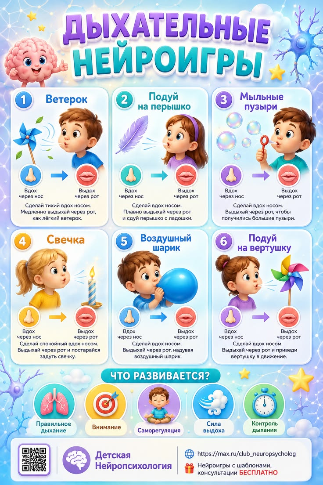

05 · Практические инструменты
Что можно попробовать вместе с ребёнком
Ниже — практические адаптации для общения и занятий. Подбирайте их по возрасту, ситуации и готовности ребёнка. Это не диагностика и не универсальное решение для каждого.
Эмоциональный словарь
Карта эмоций: «Как я себя чувствую?»
- Можно предложить ребёнку рассмотреть карту эмоций.
- Можно обратить внимание на то, какое выражение лица или слово ребёнку сейчас ближе. Можно не выбирать.
- Если ребёнок готов к разговору, могут подойти вопросы: «Что произошло?», «Что могло повлиять на это чувство?», «Что тебе сейчас нужно?»
Важно: не угадывайте и не навязывайте ответ. Карта помогает начать разговор, а не определить состояние ребёнка вместо него.
Саморегуляция
Игра «Черепашка»
- В спокойное время можно познакомить детей с образом черепашки: когда ей трудно, она прячется в панцирь.
- Ребёнку может подойти объятие самого себя или положение калачиком — если так ему удобно.
- Упражнение может включать короткую паузу и спокойный выдох.
- «Черепашка» возвращается и выбирает: попросить помощи, сказать словами или попробовать снова.
Сначала этот приём можно освоить в игровой форме. Важно, чтобы упражнение не становилось наказанием или требованием замолчать.

Пауза и дыхание
«Цветок и свеча»
Можно предложить представить, что ребёнок нюхает цветок — мягкий вдох, а затем медленно выдыхает, будто охлаждает горячий чай или задувает свечу.
Не просите задерживать дыхание и не настаивайте, если ребёнку некомфортно. Можно выбрать другой способ паузы: потянуться, попить воды или побыть рядом.
Эмоция и ситуация
«Что мог почувствовать ребёнок?»
Сюжет: ребёнок построил высокую башню из кубиков. Другой ребёнок случайно задел её, и башня упала.
На карточке можно предложить несколько возможных чувств: например, огорчение, злость, удивление или даже интерес к тому, как построить заново.
Вопросы: «Что мог почувствовать ребёнок?», «Как мы можем узнать, что он чувствует?», «Что могло бы ему помочь?»
Подчеркните: одинаковая ситуация может вызывать разные переживания.
Эмпатия
«Как предложить помощь?»
Сюжет для обсуждения: на прогулке ребёнок поскользнулся, сел на землю и выглядит расстроенным. Другой ребёнок заметил это.
Можно спросить: «Что мы заметили?», «Как можно узнать, нужна ли помощь?»
Пример ответа: «Ты упал? Тебе помочь подняться или позвать взрослого?»
Можно обратить внимание на то, что уважительная помощь начинается с вопроса, а не с решения за другого.
Поддержка без давления
Выбор вместо приказа
Когда ребёнок расстроен, взрослый предлагает два-три доступных варианта:
«Хочешь, я побуду рядом? Или тебе нужна небольшая пауза? Может, попробуем вместе?»
Выбор должен быть настоящим: если ребёнок не хочет разговаривать, можно вернуться к беседе позже.